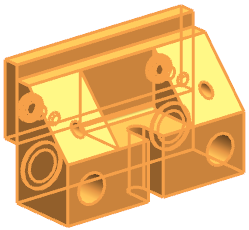
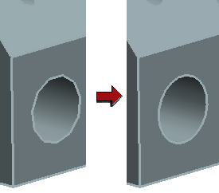
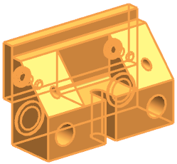
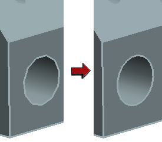

显示轻量级组件
-
在装配导航器中，右击背景并选择全部解包
 。
。 -
右击 des02_fixed_jaw_assm_xx 并选择选择装配。

-
右击选定的装配并选择显示轻量级。
整个装配现在都在轻量级模式中显示，表示列显示一个羽毛符号
 。
。您分辨是否轻量级显示模式的最好方法是通过查看圆形边，左图中显示的是孔的边在轻量级显示模式中显示为三角边。右图中显示孔的边在精确模式中显示为光顺边。

在装配导航器中，右击背景并选择全部解包  。
。
右击 des02_fixed_jaw_assm_xx 并选择选择装配。

右击选定的装配并选择显示轻量级。
整个装配现在都在轻量级模式中显示，表示列显示一个羽毛符号 。
您分辨是否轻量级显示模式的最好方法是通过查看圆形边，左图中显示的是孔的边在轻量级显示模式中显示为三角边。右图中显示孔的边在精确模式中显示为光顺边。
